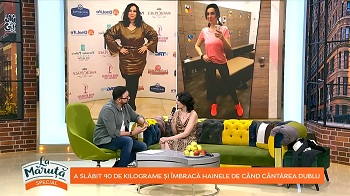

Am slăbit cu această Dietă! Acum și în Spania.
"Fetelor, după ce am fost invitată la emisiunea lui Măruță nici nu mi-am închipuit că voi o să aveți atâtea întrebări de pus despre metoda mea de a slăbi - pur și simplu mi-ați umplut inbox-ul cu mesaje! În loc să răspund la fiecare mesaj în parte, am hotărât să scriu o postare despre acest subiect."
Mai multe detalii pe pagina artistei.
Mai multe detalii pe pagina artistei.
Cum a slăbit Roxana .A văzut o poză într-o zi și totul s-a schimbat
Roxana a declarat că momentul declanșator pentru ea a fost o fotografie.
"Am fost cu prietenii la munte şi acolo ne-am făcut o fotografie de grup. În clipa în care m-am văzut în respectiva fotografie, alături de prietenele mele, aproape dublă ca dimensiune, de fapt, m-am văzut ca un uriaş, m-a şocat. Eram şi până atunci conştientă de cum arăt şi evident că eram nemulţumită, dar din acel moment am hotărât că trebuie să iau măsuri, că nu pot să mai continui aşa, că viaţa mea nu poate fi dominată de aceste kilograme în plus."
Roxana nu își mai dorea să se simtă complexată
„Nu mai voiam să intru într-un magazin de haine şi vânzătoarea să se uite la mine, să mă măsoare din cap până în picioare şi să zică: ”…pentru dumneavoastră nu avem nimic”. Simţeam că îmi fuge pământul de sub picioare. Senzaţia pe care o ai când cineva îţi spune cuvintele acestea este groaznică. Pe lângă considerentele de natură estetică, se adăuga şi aspectul medical, mă simţeam lipsită de energie, lentă şi oboseam repede“, a dezvăluit tânăra în vârstă de 33 de ani.